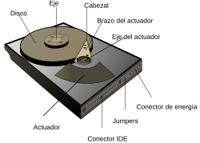

Unidad de disco duro

En
informática ,
una unidad de disco duro o unidad de disco rígido (en inglés: hard disk drive,
HDD) es un
dispositivo de almacenamiento de datos que emplea un
sistema de
grabación magnética para almacenar y
recuperar
archivos digitales. Se compone de uno o más
platos o discos rígidos, recubiertos con material
magnético y unidos por un mismo
eje que gira a gran
velocidad dentro de una caja metálica sellada. Sobre
cada plato, y en cada una de sus caras, se sitúa un
cabezal de lectura/escritura que flota sobre una delgada
lámina de aire generada por la rotación de los discos.
1
Permite el
acceso aleatorio a los datos, lo que significa
que los
bloques de datos se pueden almacenar o
recuperar en cualquier orden y no solo de forma
secuencial. Las unidades de disco duro son un tipo de
memoria no volátil, que retienen los datos almacenados
incluso cuando están apagados.
2 3 4
El primer disco duro fue inventado por IBM, en 1956. 5 A
lo largo de los años, han disminuido los precios de los
discos duros, al mismo tiempo que han multiplicado su
capacidad, siendo la principal opción de
almacenamiento secundario para computadoras personales
, desde su aparición en los años 1960.6 Los
discos duros han mantenido su posición dominante gracias a los constantes incrementos en la densidad de
grabación, que se ha mantenido a la par de las necesidades de almacenamiento secundario.6
Mejorados continuamente, los discos rígidos han
mantenido esta posición en la era moderna de los
servidores y las computadoras personales. Más de 224
compañías han fabricado unidades de disco duro
históricamente, aunque después de una extensa
consolidación de la industria, la mayoría de las unidades
son fabricadas por Seagate, Toshiba y Western Digital.

Los discos duros dominan el volumen de almacenamiento
producido (exabytes por año) para servidores. Aunque la
producción está creciendo lentamente, los ingresos por ventas y
los envíos de unidades están disminuyendo debido a que las
unidades de estado sólido (SSD) tienen mayores tasas de
transferencia de datos, mayor densidad de almacenamiento de
área, mejor confiabilidad,
7 y tiempos de acceso y latencia
mucho más bajos.
8 9 10 11